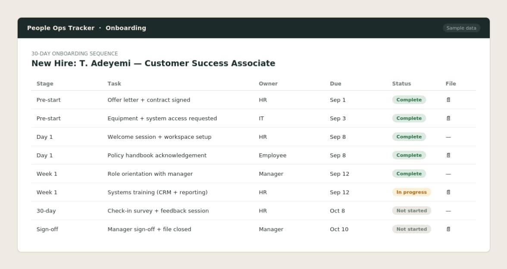
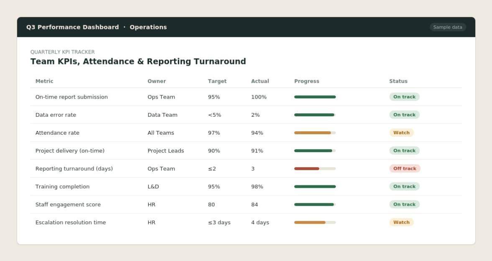
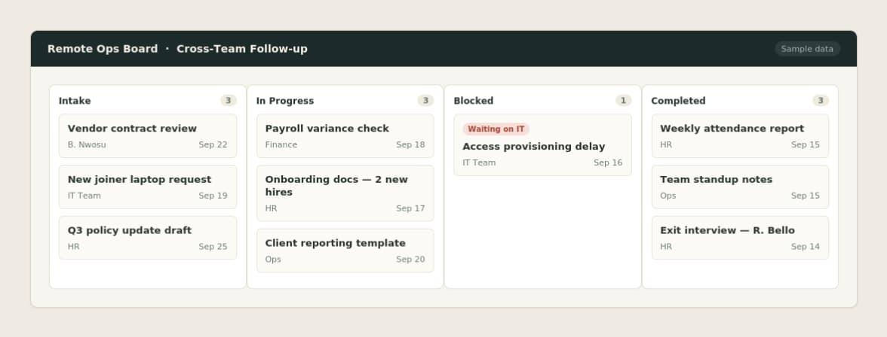
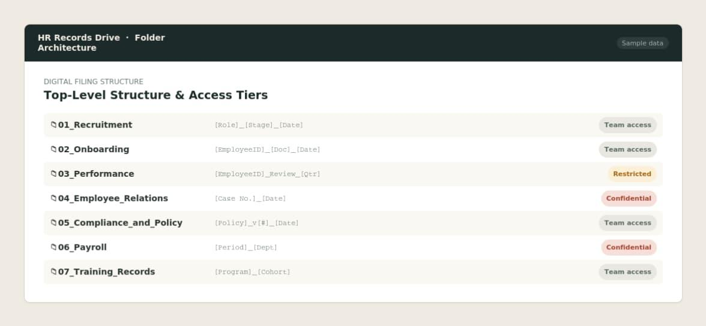
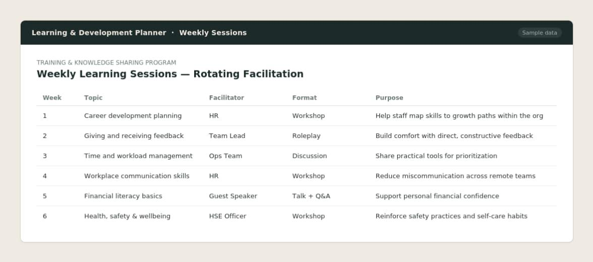
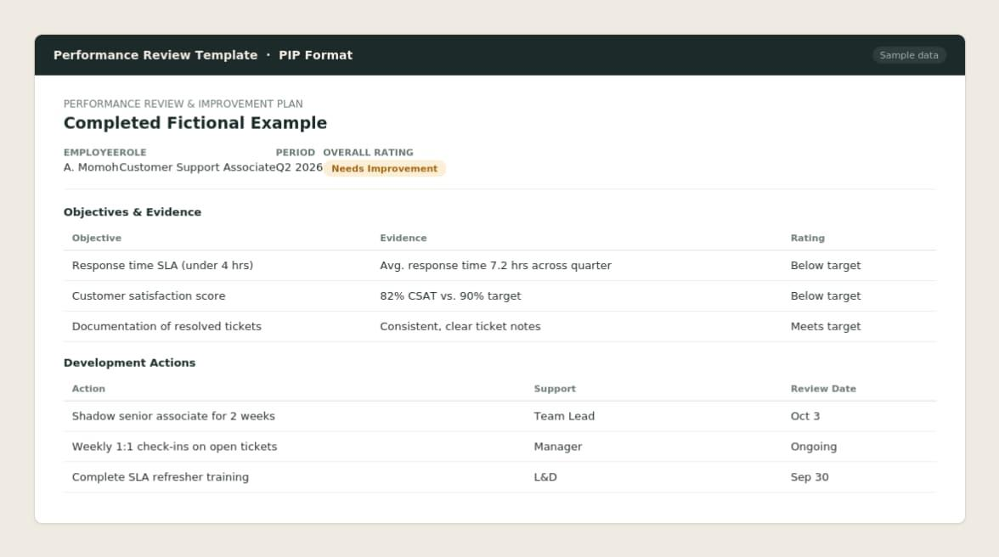

I build practical HR systems that help organizations hire well, onboard effectively, manage performance, develop people, and keep HR operations organized. My background in frontend development means I can work directly with the technical teams and tools that modern HR depends on.
Three things sit at the centre of how I work.
Structured employee experiences across recruitment, onboarding, performance, development, and day to day employee support. The goal is that no one has to guess what happens next.
Clear workflows, documentation, and ownership that make HR consistent and traceable. A process only works if the people using it understand it without being walked through.
KPIs, feedback, and reporting that connect individual contributions to business objectives, so performance conversations rest on evidence rather than impression.
| Applicant Tracking Systems | Zoho Recruit, Greenhouse. |
| HRIS and HR Platforms | BambooHR, Monday.com, Zoho |
| Data and Reporting | Microsoft Excel, Google Sheets, KPI dashboards, performance reporting, HR data and records management |
| Collaboration and Workflow | Google Workspace, Microsoft Office, Microsoft Teams, Slack, Trello, ClickUp |
| Development and Technical | JavaScript, TypeScript, React.js, Next.js, HTML, CSS, REST API integration, Git and GitHub, Agile and Scrum |
Every item below is a sample built for this portfolio using fictional names, figures, and records. No employer or client data appears anywhere in this document.
A structured 30 day onboarding sequence covering pre start documentation, day one setup, first week orientation, 30 day check in, and manager sign off. Built to remove guesswork from a new hire's first month and give managers a single reference point.

Sample shows: task owner, due date, completion status, and document attachment per stage.
Built and tracked using tools including ClickUp, Trello, and Google Workspace.
A quarterly dashboard monitoring team KPIs, attendance, project delivery, and reporting turnaround. Designed so management can see status at a glance and drill into any metric that is off track.

Sample shows: metric, owner, target, actual, progress bar, and status flag across eight tracked measures.
Built using Microsoft Excel and Google Sheets, sourced from HRIS and reporting exports.
A board based system for assigning work, tracking deadlines, and following up across distributed teams. Used to keep accountability visible without daily check in meetings.

Sample shows: intake column, in progress, blocked, and completed, with owner and due date on each card.
Built in Trello, with follow-up coordinated through Slack and Microsoft Teams.
A digital filing architecture for employee records, policy documents, and operational information. Folder logic is built around retrieval speed and access control rather than chronology.

Sample shows: top level structure, naming convention, and access tier per folder.
Structured in Google Workspace (Drive), with access tiers mirrored in the HRIS.
A weekly internal learning session format covering career development, workplace readiness, and life skills, with rotating staff ownership of each topic.

Sample shows: session plan, purpose statement, activity structure, and facilitator rotation.
Planned in Google Workspace, with session materials designed in Canva.
An appraisal form and performance improvement plan structure covering objectives, evidence, rating, development actions, and review dates.

Sample shows: blank template plus one completed fictional example.
Modeled on HRIS review workflows used in BambooHR and Zoho.
Most HR professionals rely on someone else to translate between people operations and the systems that run them. I do not.
| Languages | JavaScript, TypeScript, HTML, CSS |
| Frameworks and libraries | React.js, Next.js |
| Practice | REST API integration, Git and GitHub version control, Figma to build interpretation, Agile and Scrum |
| Certification | JavaScript Algorithms and Data Structures (freeCodeCamp), Software Development Track (Stutern) |
I am open to frontend development and HR technology roles in addition to HR and People Operations positions.
B.Sc., Human Physiology
University of Ilorin, Nigeria · 2015 to 2019
Foundation in biological systems, data analysis, research methodology, and scientific documentation, applied across HR operations, health and safety compliance, and evidence based decision making.
| Professional in Human Resources, International (PHRi) | HR Certification Institute, in progress |
| Human Resources Management | Alpha Consulting Services, 2020 |
| Project Management Professional | Digital Exchange Academy, 2023 |
| Virtual Assistant Professional | Digital Exchange Academy, 2024 |
| Health, Safety and Environmental Management, Levels 1 to 3 | RMCI UK, 2020 |
| JavaScript Algorithms and Data Structures | freeCodeCamp, 2022 |
| Software Development Track | Stutern, 2023 |
| IELTS | British Council, 2024 |
HR Manager, People Operations Manager, HR Coordinator, HR Systems Analyst, Talent Acquisition Manager, and Frontend Developer roles.
Remote, hybrid, or onsite. Based in Ibadan, Nigeria, and available for roles locally and internationally.
I take ownership of the function rather than waiting for direction, which is how I have operated at Vergold as the sole HR lead reporting to the CEO. I document as I go, so anything I build can be handed over and kept running by someone else. I would rather raise a problem early than manage around it quietly.
| ajibolablessing3@gmail.com | |
| Phone | +234 706 882 9225 |
| linkedin.com/in/blessing-odebunmi-48aa001b3 | |
| Location | Ibadan, Nigeria |
References available on request.